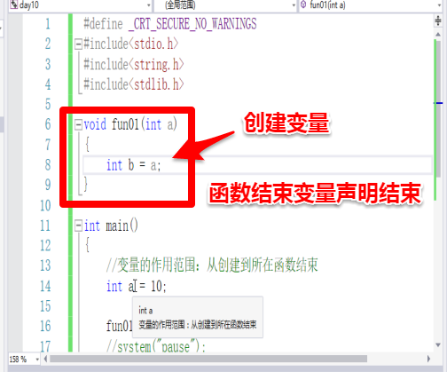

排序算法中 时间广度优化；
全局和局部变量
1、局部变量作用域：从创建到所在函数结束

2、如果在函数中 函数创建顺序从右往左

打印变量地址结果：从高向低增长

注意：不同函数中变量名可以一样，其所对应的地址不一样；
3、全局变量：作用在整个项目中，使用的前提是需要在使用的文件中进行声明

4、声明变量就是可以使用这个变量，声明不会分配内存空间

注意：如果在函数外部是全局变量 在函数外面是局部变量
如果全局变量写在主函数下面，想使用需要声明

静态全局和局部变量
1、静态局部变量和局部变量 可以被赋值

2、静态局部变量和局部变量区别： 只能被初始化一次，可以被多次赋值

全局静态变量只能作用于当前文件中，不能在全部文件中使用

3、auto区分局部变量和全局变量

注意：定义的时候自带声明，但只能在使用它的函数之上
4、声明为严谨起见，都写在头文件 .h 中

静态函数作用域当前文件

5、一个括号之内就是未命名的函数体；

for循环中的i 从循环开始到循环结束 与 循环外面的 int i =100; 不冲突；

小结：

声明周期

内存布局
1、程序没有加载到内存前，可执行程序内部已经分好3段信息，分别为代码区（text）、初始化数据区（data）和未初始化数据区（bss）

2、数据区：

注意：LINUX系统编程会将数据区拆开
内存四区模型

注意：
栈区：
①只有c语言将数组放在栈区；
②如果在程序中创建的的数据应该放在堆区；栈去大小：在不同的操作系统中系统分配给每一个程序的战区空间大小不同，一般Windows是1-8M不等，一般LINUX是1-16M不等；
③死循环搞不死电脑 ，不会沾满内存但会沾满CUP；
④递归会导致程序崩溃，栈溢出；
⑤不是公用，可以被访问；
堆区：
开辟堆空间大小与内存有关；
内中位置模型：

注意：栈区向下生长，大小端对齐
3、malloc在内存的动态存储区(堆区)中分配一块长度为size字节的连续区域
格式：malloc(分配大小)


释放堆空间

注意：创建完的堆空间，在使用完之后不释放，会占用内存空间
4、误区：
开辟0个空间即是野指针

为野指针赋值操作

未释放空间，释放会报错

报错结果：

注意：多次释放空间会报错
5、释放空间流程
先判断在释放 释放完成 变成空指针

6、置为空，在释放程序不会报错

7、例子：堆空间开辟数组和冒泡排序：
①空间开辟

②随机数

③循环赋值

④冒泡排序

8、strcopy 拷贝
strcopy操作对空间，会将拷贝的字符串全都放到堆空间中，这样就会导致超出堆空间 使程序出现错误；

注意：开辟多大堆空间，就要操做多大堆空间

9、重置 memset 参数：目标 值 字节大小

注意：①memset可以重置内存区域的值 初始化值为0 但在char类型中可以初始化
相同的值
②memset 重置内存的值，前提是重置区域可读可写
重置数组（栈区内容）

10、memcpy拷贝：拷贝src所指的内存内容的前n个字节到dest所值的内存地址上
①可以从栈区拷贝到堆区 也可以从堆区拷贝到栈区

注意：源地址与目标地址不能发生重叠

strcpy 与mencpy的不同
①函数参数不同
②strcpy拷贝字符串 memcpy 可以拷贝一块内存
③strcpy与memcpy拷贝结束标志不同

11、memmove()功能用法和memcpy()一样，
区别在于：dest和src所指的内存空间重叠时，memmove()仍然能处理，不过执行效率比memcpy()低些。

注意：
拷贝重叠内存地址不会出现问题，但是效率比较低
如果拷贝源与拷贝目标没有重叠两个函数效率一样
12、memcmp:比较s1和s2所指向内存区域的前n个字节

类型不同，但在内存中存的ASCII码相同，所以比较的内容相同

注意：不限类型比对
13、栈内存存储过程
栈遵从规则:后进先出 先进后出

练习题：1、求出三名学生三门功课成绩 并排序 通过堆空间实现
思路：二维数组模型arr[3][3]
①开辟一个指针的堆空间

②存三门成绩

③为三门成绩赋值

④释放：先释放内层 在释放外层

释放例图演示：

2、冒泡排序